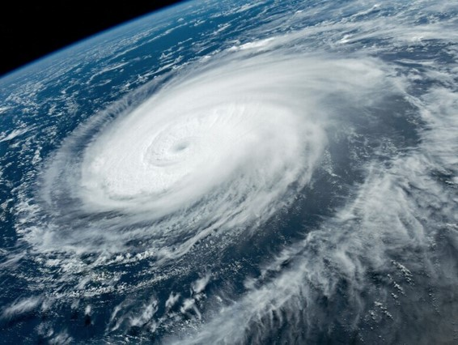

Climate Crisis Response Lab

SCIENCE AND TECHNOLOGY
FOR CLIMATE ACTION
Building a Sustainable Future for the Next Generation
OUR PURPOSE
A changing climate,
a shared responsibility
The Climate Crisis Response Lab (CCRL) at Seoul National University of Science and Technology brings together satellite observations, numerical modeling, and artificial intelligence to understand our changing climate and develop science-based solutions.
Our research spans greenhouse gas monitoring, renewable energy forecasting, extreme weather prediction, climate risk assessment, and climate intervention technology — advancing a carbon-neutral and climate-resilient future.
Connect with our labEXPLORE OUR RESEARCH
Five research areas,
one resilient future
Connecting climate science with
the solutions our world needs.
RESEARCH IN FOCUS
Recent findings

SCIENTIFIC REPORTS · 2024
Finding patterns
in a changing storm
Classification of tropical cyclone rain patterns using convolutional autoencoder.
Read the publication ↗A new view of
hurricane moisture
Four moisture patterns surrounding Atlantic hurricanes revealed by deep learning.
DEEP LEARNING ↗Warmer oceans,
changing cyclone risks
Investigating sea surface temperature and tropical cyclone destructiveness over East Asia.
CLIMATE DYNAMICS ↗THE PEOPLE OF CCRL
Diverse backgrounds,
shared curiosity
A collaborative community exploring
the science of a more resilient planet.
KNOWLEDGE TO BUILD ON
Our publications
Research across climate, weather,
energy, and environmental science.
LET’S MOVE SCIENCE FORWARD
A better future
starts with a conversation
We welcome collaboration across disciplines,
and curious students and researchers.
- FIND US
- Chungun-Hall, SeoulTech
Office · Room 313
Lab · Room 138 - CALL US
- +82 2 970 6616
- FIND US ONLINE
- Google Scholar ResearchGate LinkedIn